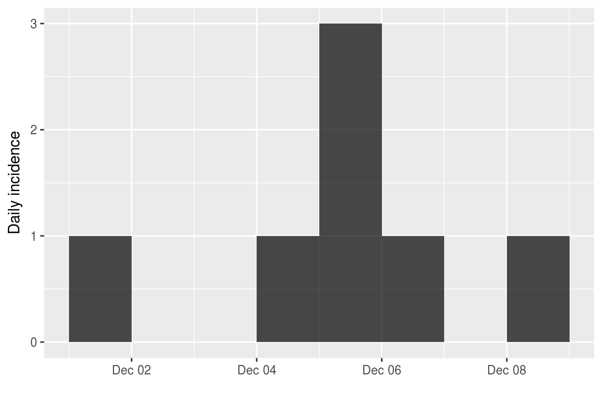
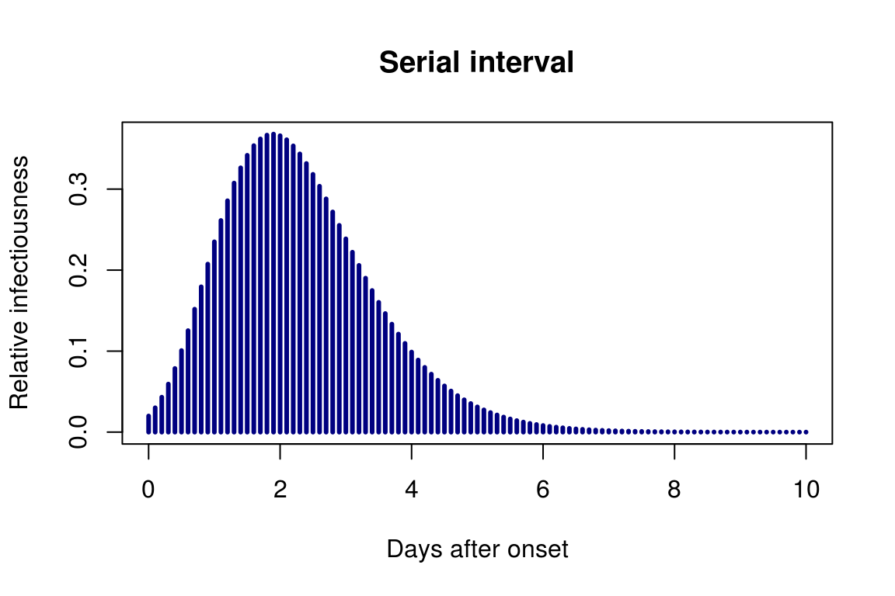

This package uses data on daily incidence, the serial interval (time between onsets of infectors and infectees) and the reproduction number to simulate plausible epidemic trajectories and project future incidence. It relies on a branching process where daily incidence follows a Poisson process determined by a daily infectiousness, computed as:
\[ \lambda_t = \sum_{s = 1}^{t - 1} y_s w(t - s) \]
where \(w()\) is the probability mass function (PMF) of the serial interval, and \(y_s\) is the incidence at time \(s\).
Installing the package
To install the current stable, CRAN version of the package, type:
install.packages("projections")To benefit from the latest features and bug fixes, install the development, github version of the package using:
devtools::install_github("reconhub/projections")Note that this requires the package devtools installed.
What does it do?
The main features of the package include:
project: a function generating projections from an existing incidence object, a serial interval distribution, and a set of plausible reproduction numbers (\(R\)); returns aprojectionsobject.plot/print: plotting and printing methods forprojectionsobjects.get_dates/get_incidence: accessors forprojectionsobjects.as.data.frame: conversion fromprojectionsobjects todata.frame.
Resources
Worked example
In the following, we simulate a small outbreak with the following dates of onset:
onset <- as.Date(c("2017-12-01", "2017-12-04", "2017-12-05", "2017-12-05",
"2017-12-05", "2017-12-06", "2017-12-08"))The package incidence is used to generate an epicurve:
library(incidence)
i <- incidence(onset)
i## <incidence object>
## [7 cases from days 2017-12-01 to 2017-12-08]
##
## $counts: matrix with 8 rows and 1 columns
## $n: 7 cases in total
## $dates: 8 dates marking the left-side of bins
## $interval: 1 day
## $timespan: 8 daysplot(i)
Let us assume the following serial interval distribution with a mean of 2.8 days and a CV of +/- 0.4 days (in practice, these values would likely come from the literature):
library(distcrete)
library(epitrix)
mu <- 2.8
cv <- 0.4
params <- gamma_mucv2shapescale(mu, cv)
params## $shape
## [1] 6.25
##
## $scale
## [1] 0.448si <- distcrete("gamma", shape = params$shape, scale = params$scale, interval = 1, w = 0)
si## A discrete distribution
## name: gamma
## parameters:
## shape: 6.25
## scale: 0.448plot(si$d, xlim = c(0,10), type = "h", lwd = 3, col = "navy",
main = "Serial interval", xlab = "Days after onset", ylab = "Relative infectiousness")
We also need to estimate transmissibility. For this, we use the function get_R from the earlyR package:
library(earlyR)
R <- get_R(i, si = si) # ML estimation
R_samp <- sample_R(R, 100) # 100 plausible values of RWe can now predict future incidence based on these data:
library(projections)
set.seed(1)
pred <- project(i, R = R_samp, si = si, n_days = 14)
pred##
## /// Incidence projections //
##
## // class: projections, matrix
## // 14 dates (rows); 100 simulations (columns)
##
## // first rows/columns:
## [,1] [,2] [,3] [,4] [,5] [,6]
## 2017-12-09 2 1 0 4 2 0
## 2017-12-10 1 0 0 1 1 3
## 2017-12-11 1 1 0 5 1 3
## 2017-12-12 3 3 0 7 3 1
## .
## .
## .
##
## // dates:
## [1] "2017-12-09" "2017-12-10" "2017-12-11" "2017-12-12" "2017-12-13"
## [6] "2017-12-14" "2017-12-15" "2017-12-16" "2017-12-17" "2017-12-18"
## [11] "2017-12-19" "2017-12-20" "2017-12-21" "2017-12-22"plot(pred) # median and 95% prediction
apply(pred, 1, mean) # average prediction per day## 2017-12-09 2017-12-10 2017-12-11 2017-12-12 2017-12-13 2017-12-14
## 0.96 0.92 1.15 1.31 1.59 1.91
## 2017-12-15 2017-12-16 2017-12-17 2017-12-18 2017-12-19 2017-12-20
## 2.22 3.06 3.39 4.05 5.34 6.09
## 2017-12-21 2017-12-22
## 7.65 9.92apply(pred, 1, range) # range across simulations## 2017-12-09 2017-12-10 2017-12-11 2017-12-12 2017-12-13 2017-12-14
## [1,] 0 0 0 0 0 0
## [2,] 5 4 7 7 10 18
## 2017-12-15 2017-12-16 2017-12-17 2017-12-18 2017-12-19 2017-12-20
## [1,] 0 0 0 0 0 0
## [2,] 19 18 23 31 39 47
## 2017-12-21 2017-12-22
## [1,] 0 0
## [2,] 67 64An alternative representation of the outcomes:
library(ggplot2)
df <- as.data.frame(pred, long = TRUE)
head(df)## date incidence sim
## 1 2017-12-09 2 1
## 2 2017-12-10 1 1
## 3 2017-12-11 1 1
## 4 2017-12-12 3 1
## 5 2017-12-13 3 1
## 6 2017-12-14 5 1p <- ggplot(df, aes(x = date, y = incidence)) + geom_jitter(alpha = .3) + geom_smooth()
p## `geom_smooth()` using method = 'gam'
Vignettes
projections does not currently have a dedicated vignette; instead, it is illustrated in conjunction with earlyR on this vignette.
Websites
A dedicated website can be found at: http://www.repidemicsconsortium.org/projections.
Getting help online
Bug reports and feature requests should be posted on github using the issue system. All other questions should be posted on the RECON forum:
http://www.repidemicsconsortium.org/forum/
Contributions are welcome via pull requests.
Please note that this project is released with a Contributor Code of Conduct. By participating in this project you agree to abide by its terms.